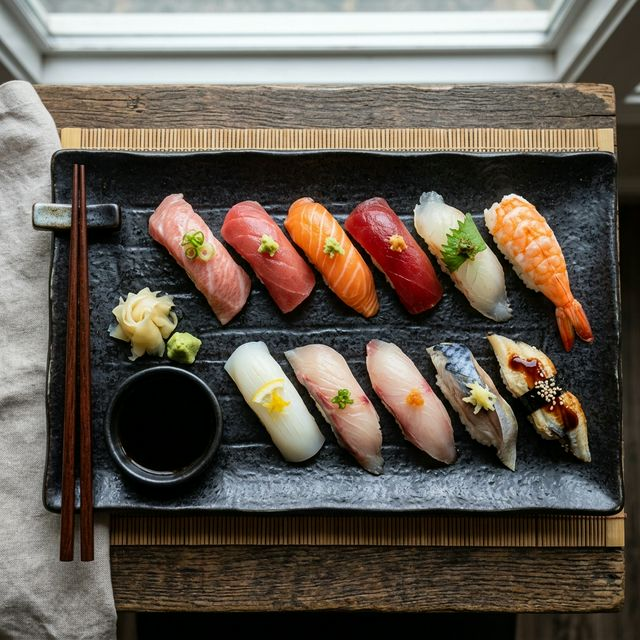
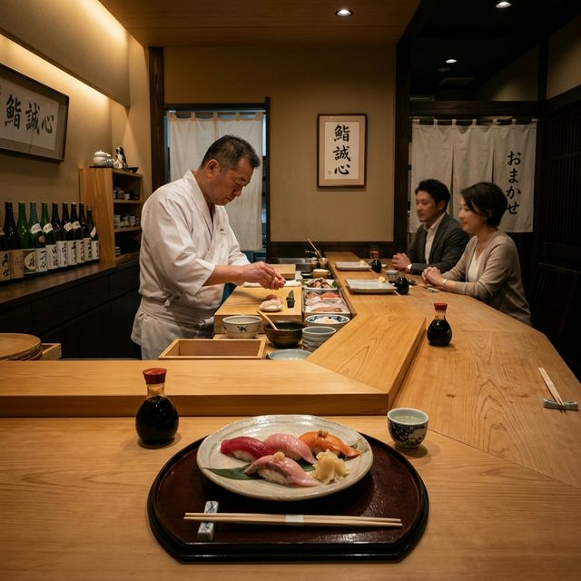
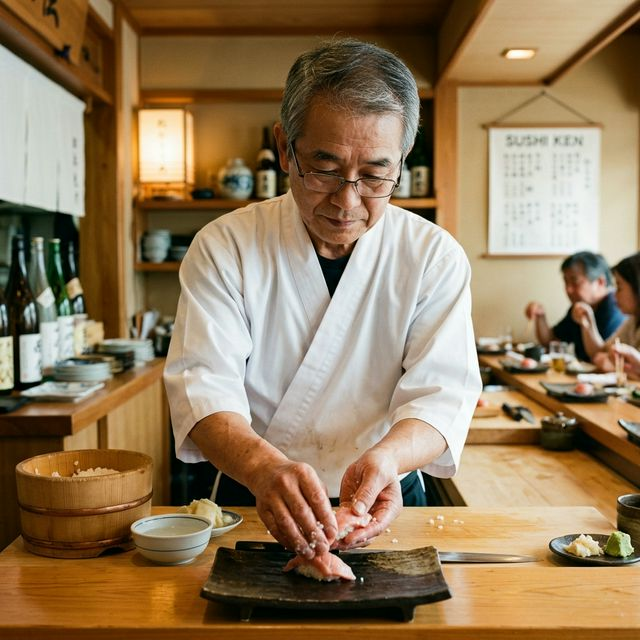
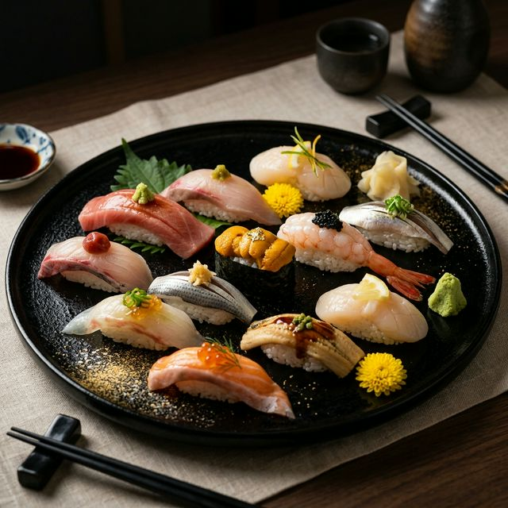
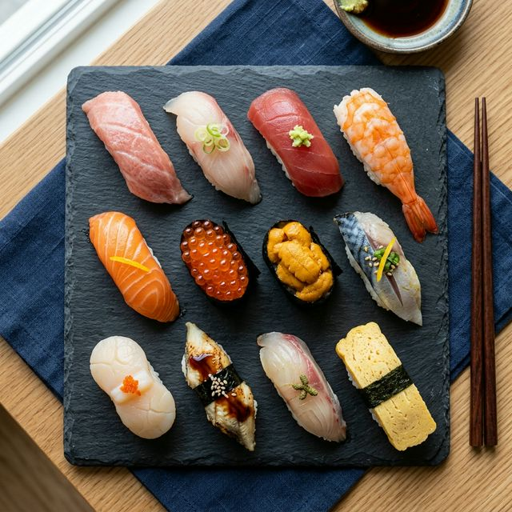
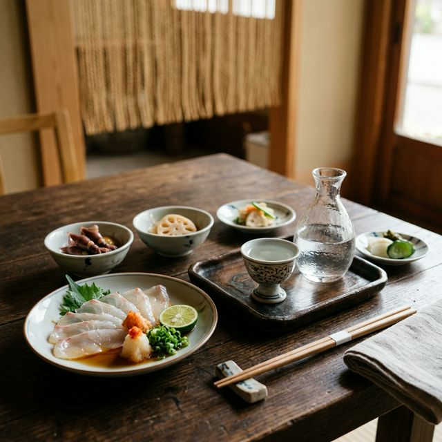

季節の旬を、熟練の技で丁寧に握る。 日本の食の粋を、一皿に込めて。

その日の市場で選び抜いた素材だけを使用。 おまかせコースでご堪能ください。

カウンター越しに響く職人の息づかい。 大切なひとときを、特別な場所で。

受け継がれる技と、 変わらぬ想いを一貫に。
昭和63年の創業以来、土田本舗は「素材の声を聴く」という一点にこだわり続けてきました。その日の仕入れによって変わるお品書き、職人が手渡しする温もりのある一貫。カウンターを挟んで生まれる、お客様と職人との小さな対話を大切にしています。
急ぐことなく、丁寧に。日本の食文化が持つ静けさと豊かさを、ここ土田本舗でお感じいただければ幸いです。

その日の旬を職人が選び、最高の状態でお出しする本格江戸前鮨。

厳選したネタを一つひとつ丁寧に握るランチ・ディナー向け定番コース。

旬の食材を活かした前菜や酒肴を、日本酒とともにお楽しみください。
ご予約・お問い合わせはお電話またはフォームにてお気軽にどうぞ。 おまかせコースはご予約をお勧めいたします。